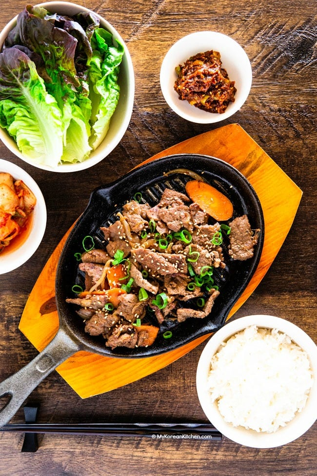

Bulgogi

Korean BBQ beef
Literally speaking, bulgogi means "fire meat" It is often made with tender parts of beef, pork or chicken. HOwever, in general terms, unless specified, bulgogi is made with beef.
Undoubtedly it is one of the most well-known Korean traditional foods and it has been around for thousands of years. Naturally, the cooking method of bulgogi evolved over time and it varies by region too.
Ingredients
- Rib eye
- Onion
- Green onion
- Carrots
- Sesame oil
- Sesame seeds
- Soy sauce
- Brown sugar
- Rice wine
- Pear or red apple
- Minced garlic
- Minced ginger
- Black pepper
Steps
- Blend the marinade ingredients in a mixer and set aside.
- Place the thinly sliced meat in a bowl and pour the marinade over it.
- Add the sesame oil and mix it into the meat.
- Cover the bowl with cling wrap and marinate for 4 hours.
- Add the meat and vegetables to a skillet or bbq grill and cook it on medium high to high heat for 3 to 5 mins.
- Toss in the sesame seeds and stir them quickly.